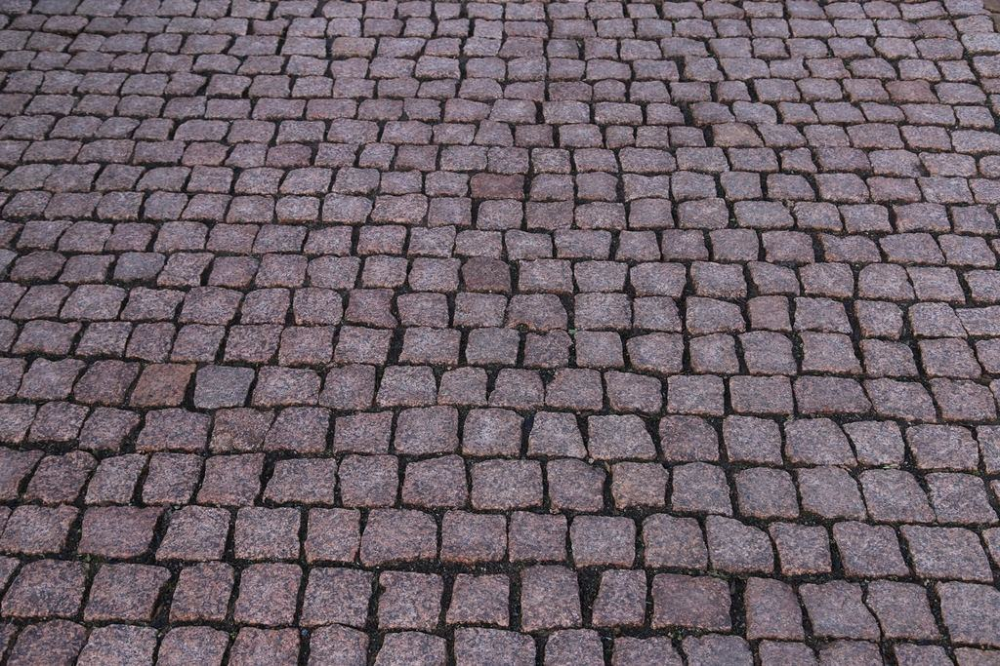
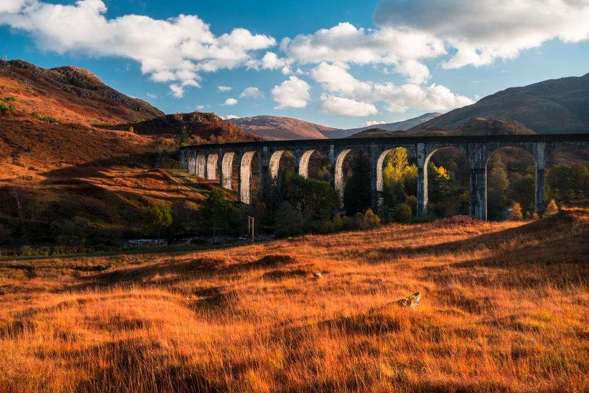

Tjänster
I dag är vi 85 anställda med en omsättning på 340 miljoner kronor. Vi äger 61 maskiner, har egen verkstad i Umeå och styr alla större grävmaskiner med 3D-maskinstyrning direkt från projektörernas modeller.
Vilket projekt planerar ni?

Exploatering
Vi tar ett nytt bostadsområde från avverkad skog till asfalterade gator med VA, el och fiber i marken. Under 2025 färdigställde vi 410 tomter i Umeå, Skellefteå och Piteå.
Vi arbetar både på totalentreprenad och utförandeentreprenad enligt AB 04 och ABT 06.

VA och ledningsnät
Kommunerna i norr byter ut ledningar som lades på 60- och 70-talen, ofta samtidigt som de bygger ut till nya områden. Vi har egna rörläggarlag och utför provtryckning och TV-inspektion själva.
Ramavtal med sju kommuner i Västerbotten och Norrbotten.

Industri och logistik
Batteri-, stål- och vätgasetableringarna har gjort att Norrland behöver hektar på hektar ny industrimark. Vi har levererat planer på upp till 28 hektar med bärlager klara för gjutning.
Vi bemannar stora projekt med upp till 40 maskiner samtidigt.

Gata och infrastruktur
Gator, cirkulationsplatser och gång- och cykelvägar åt kommuner och Trafikverket. Vi har egna trafikanordningsplaner och utbildad personal för arbete på väg.
Asfalt och belysning gör vi med fasta underentreprenörer.
Från förfrågningsunderlag till relationshandling
- 1

Anbud och kalkyl
Vi mängdar från er modell och lämnar anbud med tydlig tidplan och resursplan.
- 2

Maskinmodell
Vår projekteringsgrupp bygger 3D-modeller som laddas direkt i maskinerna.
- 3

Produktion
En platschef och en arbetsledare per projekt, med veckovisa byggmöten och daglig dagbok i appen.
- 4

Relationshandlingar
Vi mäter in alla ledningar och lämnar relationsritningar i rätt format till kommunens GIS.
Certifierade, utbildade och kreditvärdiga
- ISO 9001, 14001 och 45001Certifierat ledningssystem för kvalitet, miljö och arbetsmiljö sedan 2020, granskas årligen av extern revisor.
- Arbete på vägAlla arbetsledare och förare är utbildade enligt Trafikverkets krav, och vi har egna TA-planerare.
- MaskinentreprenörernaMedlemmar i ME och utbildar lärlingar via ME:s yrkesutbildning för anläggningsförare.
- Högsta kreditvärdighetAAA-rating fem år i rad – viktigt för beställare som ska teckna avtal över flera år.